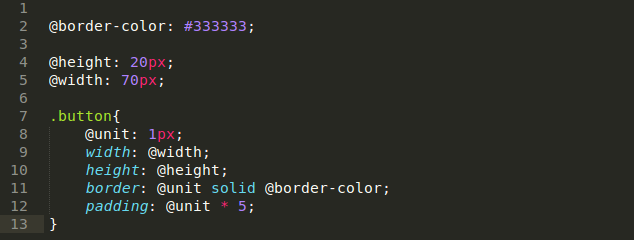
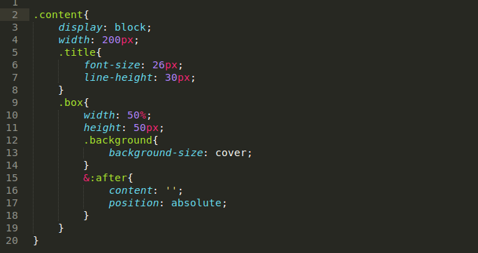
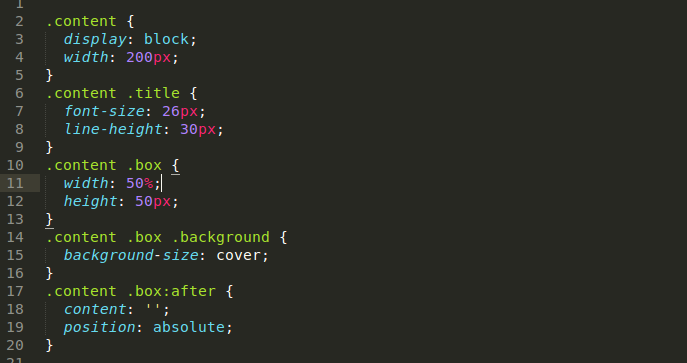

Mixins in LESS
Vlad BicuFront-End Developer
How to loop in LESS
Robert PamfileFront-End Developer
Looping in LESS
In Less a mixin can call itself. Such recursive mixins, when combined with Guard Expressions and Pattern Matching, can be used to create various iterative/loop structures. Less Documentation
How it works exactly?
Loops are generated not through an explicit loop statement but rather by recursively calling the mixin. The .loopExample expression on the last line causes the mixin loop to be started. From there the tile CSS is generated and .loopExample calls itself on the last line until the guard (@counter < @n) is FALSE.
As I said, the guard (@counter < @n) is the condition that stops the loop. You have many options to write this condition, depending on your needs. Another example would be :
In this case we don't have a general length of steps and we can specify a diferent length anytime we call the mixin.
Well, what it is used for?
You can use looping for: sprite classes, layout grid, etc. Basically, the possibilities are limited by imagination.
Loop through an array
You can also loop through a list of elements with the magic function: extract()!
Nested loops
You can also loop through a list of elements with the magic function: extract()!

Parallax Example
Click hereFeatures
Variables
Variables in LESS work exactly like they do in Javascript or most other programming languages. You can use them to store a value and then use the variable instead of the value itself whenever you need it.

Nesting
In LESS we can nest CSS rules which gives a shorter and more logical version of our stylesheet.
 